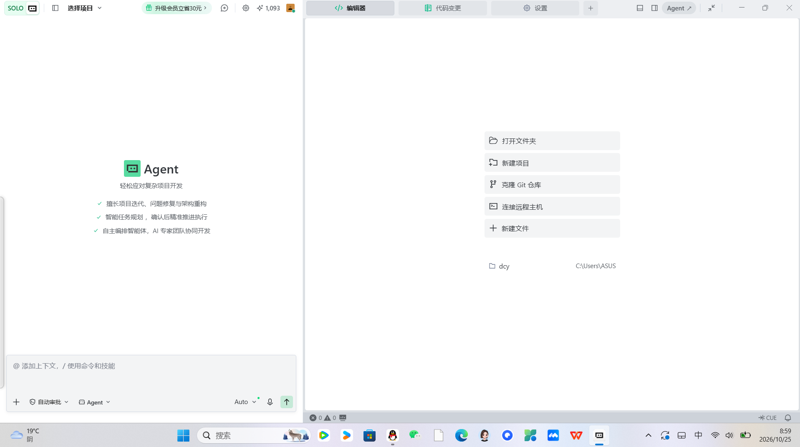
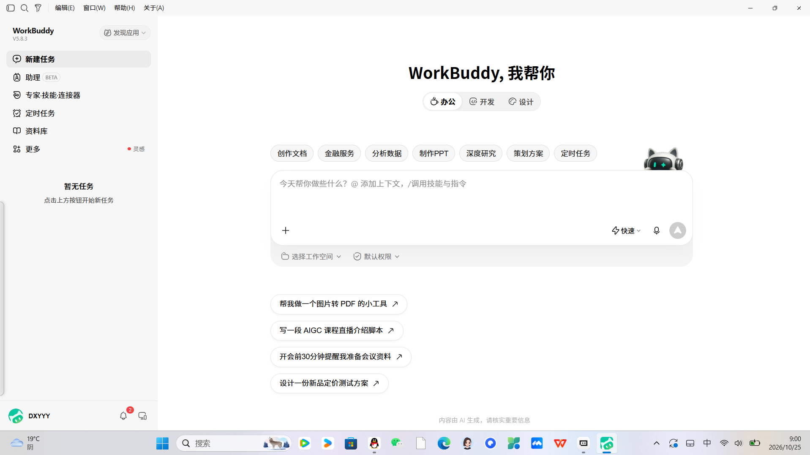

AI Agent 使用情况报告
1. 引言
随着大模型技术的快速发展，AI Agent 正逐步从概念走向落地，成为日常学习与开发工作中不可或缺的辅助工具。作为数据科学与大数据技术专业的本科生，我在本学期的课程实践中，尝试将 Trae（WorkBuddy）AI Agent 引入到实际任务中，用以辅助完成静态站点搭建、命令行报错排查、网页结构调试等工作。本报告基于真实实践经历，记录我在使用 AI Agent 过程中的操作流程、协作方式、遇到的问题以及个人反思，旨在客观呈现 AI Agent 在学生学习场景中的实际价值与边界。
2. 使用工具与应用场景
2.1 使用工具
本次实践主要使用的工具为 Trae（WorkBuddy）AI Agent。Trae 内置对话式交互界面，支持代码生成、命令解释、文档撰写等多种能力，适合在编码与工程化任务中提供即时反馈。同时，我也对 Codex 进行了对比使用：Codex 在长文本生成与算力调度上响应更快，但在中文语境理解与代码细节把控上，Trae 的表现更为贴合日常开发习惯。两者并非替代关系，而是根据任务复杂度灵活选择。
2.2 应用场景
在本次课程实践中，AI Agent 主要被应用于以下场景：
- Hugo 静态网页安装配置：协助梳理安装步骤、配置文件结构与主题选择。
- PowerShell 命令报错排查：解读报错信息，定位环境变量与执行策略问题。
- 网页结构调试：分析 HTML/CSS 布局问题，提供修复建议。
- 代码问题修复：针对具体报错给出可能原因与修改方案。
- 课程文档整理：辅助撰写实验报告、梳理笔记要点。
3. 具体使用过程
本次实践的核心任务是从零搭建一个 Hugo 静态站点。由于此前未接触过 Hugo，我将整体需求提交给 Trae Agent，由其协助拆解任务。Agent 将任务划分为环境安装、站点初始化、主题配置、内容编写与本地预览五个阶段，并给出每一步的操作命令与注意事项。

在实际执行中，我并未直接照搬 Agent 的输出，而是采取"Agent 给出方案—人工测试验证—发现问题后反馈修正"的协作流程。例如，在执行 Hugo 安装命令时，PowerShell 提示执行策略受限，Agent 建议使用 Set-ExecutionPolicy 修改策略，但我考虑到系统安全，未采纳该方案，而是改用 hugo.exe 直接调用的方式绕过限制。又如，主题配置文件中的路径写法在 Windows 环境下出现兼容问题，Agent 初次给出的方案未生效，我将实际报错截图反馈后，Agent 才定位到是路径分隔符差异导致的问题。
整个过程中，Agent 承担了"知识检索与方案生成"的角色，而我则负责"需求判断、方案取舍与结果验证"。这种人机协作模式显著缩短了从零入门的时间，但也要求使用者具备基本的技术判断力，能够识别输出中的不合理之处。

4. AI Agent 的使用优势
AI Agent 的首要优势在于降低入门门槛。对于 Hugo、PowerShell 等此前未接触的工具，Agent 能够在短时间内梳理出完整的操作路径，省去了大量查阅零散文档的时间。其次，Agent 具备即时反馈能力，在遇到报错时可以快速给出可能的原因与排查方向，避免在单一问题上长时间卡壳。此外，Agent 在代码片段生成与文档撰写方面表现突出，能够根据上下文生成结构合理的代码和文字草稿，为后续人工修改提供良好基础。
5. 使用局限与存在问题
尽管 AI Agent 带来了效率提升，但其局限性同样不容忽视。最突出的问题是代码幻觉：Agent 有时会生成看似合理但实际无法运行的代码，或引用不存在的 API 与参数，若不经测试直接使用，会导致反复出错。其次，Agent 的输出偶有事实性错误，例如对某些命令参数的解释与官方文档不一致，需要人工核对。
更为关键的是，Agent 无法自主判断任务的合规性与作业要求。例如在课程作业中，Agent 不了解教师对代码规范、报告格式的具体要求，生成的内容往往需要大幅调整才能符合提交标准。因此，人工复核与验证必不可少——Agent 可以加速过程，但不能替代使用者对最终结果负责。
6. 个人收获与反思
作为数据科学与大数据技术专业的学生，我深刻认识到 AI Agent 的定位是辅助工具而非替代者。在大数据相关的实践中，数据清洗、模型选择、结果解读等环节均依赖人的专业判断，Agent 只能在编码实现、文档整理等环节提供支持。人始终负责需求判断、底层校验与方案决策。
基于本次实践，我逐步建立了一套合理的 AI 协作工作流：先由 Agent 提供方案草稿，再由人工进行技术可行性评估，随后在实际环境中测试验证，最后将问题反馈给 Agent 进行迭代。这种流程既发挥了 Agent 的效率优势，又通过人工把关控制了输出质量，避免了对 AI 输出的盲目信任。
7. 总结与后续学习计划
本次实践表明，AI Agent 在学生学习场景中具有显著的辅助价值，能够有效降低技术门槛、提升任务推进效率。但其输出的可靠性与合规性仍需人工把关，使用者必须具备基本的技术判断力与批判性思维。后续我将继续深入学习大数据专业核心课程，同时探索 AI Agent 在数据预处理、可视化与模型调优等环节的应用，进一步完善人机协作的工作流，让 AI 真正成为学习与实践的助推器，而非依赖。